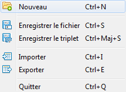

Interface utilisateur - Menu - Fichier
Le menu fichier permet principallement de contrôler le flux entrant et sortant du logiciel.

- Nouveau : créé un nouveau projet disToxic.
- Enregistrer un fichier : enregistre le tableau sélectionné de l'onglet courant dans un nouveau fichier.
- Enregistrer le triplet enregistre les tableaux sélectionnés de l'onglet courant dans trois nouveaux fichiers différents.
- Importer : importe un projet existant dans l'espace de travail de DisToxic.
- Exporter : exporte un projet selectionné dans l'arbre de sélections (représentatif de l'espace de travail de DisToxic).
- Quitter : quitte le logiel.